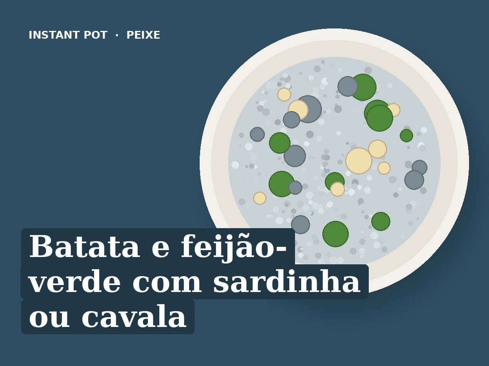

Batata e feijão-verde com sardinha ou cavala
Idioma: português de Portugal (pt-PT). Esta receita está escrita em português de Portugal. Ao importar, manter o título, os ingredientes e todos os passos em português, sem traduzir para inglês. Usar unidades métricas (g, ml, °C).
Ingredientes
- 3 batatas pequenas (cerca de 300 g)
- 200 g de feijão-verde
- 250 ml de água
- 1 lata de sardinha ou cavala com espinha, em azeite ou ao natural
- Sumo de meio limão
- Sal q.b.
Preparação
- Pôr a água na panela e o suporte de vapor (trivet) por cima, com a batata em cubos de 2 cm e o feijão-verde.
- Pressão (Pressure Cook): Pressão alta, 4 minutos.
- Libertação rápida.
- Servir com o peixe de lata escorrido e limão. O peixe não vai à panela.